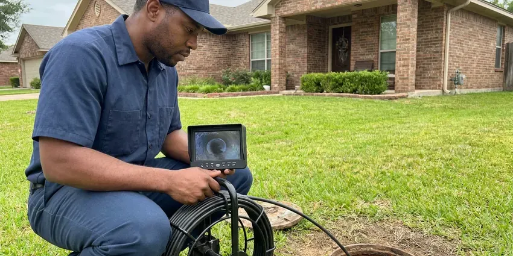

Water Line Repair in Vienna, WV
When your water line fails in Vienna, WV, you need a crew that locates the leak precisely and restores clean water the same day.
- Same-Day Leak Locating
- Warrantied Work
- Warrantied work
- Fast, Local Service

Trusted Water Line Repair Services Available in Vienna, WV.
Call now and a licensed plumber will locate your water line leak with electronic listening gear before anyone picks up a shovel.
Your Go-To for Water Line Repair in Vienna, WV
At GJK Plumbing, we're equipped to handle all types of water line problems, from subtle drips to significant pipe bursts. Our skilled plumbers in Vienna, WV use advanced diagnostics to precisely locate the source of the trouble, so the repair lasts.
Our expertise includes:
- Trenchless repair options
- Compliance with local plumbing codes
- Acoustic and tracer gas leak detection on buried mains

Additional Plumbing Maintenance Services in Vienna, WV
Our maintenance and specialty plumbing services in Vienna, WV catch small problems before they become emergencies.


Customers
Why Choose GJK Plumbing for Water Line Repair in Vienna, WV?
We are committed to delivering long-term solutions that protect your property and restore your peace of mind.
- Clear Pricing, You approve a written quote before we open the ground.
- Quality Materials, Only quality, durable piping and fittings are used for repairs, ensuring the longevity of your water line system.
- Lasting Materials, We replace failed sections with Type K copper or PEX approved for direct burial.
Citywide Coverage
GJK Plumbing proudly serves every neighborhood of Vienna, offering prompt and reliable water line repair services wherever you are. We know that water line emergencies don't keep business hours, so we're always ready to respond.
Experienced Team
Our plumbers are highly trained and experienced in water line repair, dealing with everything from minor leaks to major breaks. They stay current on the latest techniques and local regulations.
Safety-First Approach
Safety is our top priority on every water line repair job, for both our team and your property. We closely follow all local West Virginia plumbing codes and safety regulations during every step of the repair process.
Trusted Certified Vienna Plumbing Services Professionals
At GJK Plumbing, we take pride in providing certified plumbing services throughout Vienna, WV. Backed by recognized industry credentials, our experienced plumbers combine technical skill with genuine customer care. Whether it is repair, installation, or maintenance, we follow strict safety and quality standards to deliver long-lasting results you can trust.
Call Us Now PHCC Plumbing Contractor Recognition
PHCC Plumbing Contractor Recognition Better Business Bureau (BBB) Accreditation
Better Business Bureau (BBB) Accreditation Angi Certified Pro
Angi Certified Pro ISO 9001 Quality Management Certification
ISO 9001 Quality Management CertificationDependable Water Line Repair Services in Vienna, WV
Commercial Water Line Services in Vienna, WV
Businesses in Vienna, WV rely on a robust and dependable water supply, and a damaged water line can lead to serious operational disruptions. GJK Plumbing provides complete commercial water line repair and maintenance services, understanding the demands of commercial plumbing systems. We work quickly and efficiently to limit downtime, addressing issues like large-diameter pipe leaks, backflow prevention, and complex underground repairs, so your business's water service stays fully functional.

Pressure Regulator and Shutoff Repair in Vienna
Many water line problems are made worse by high incoming pressure. A failed pressure reducing valve can push well over 80 psi into your plumbing, which stresses the service line and every fixture. We test static pressure with a gauge and replace worn regulators from brands like Watts and Zurn Wilkins. We also swap seized gate valves for full-port ball valves so you can shut the water off fast in an emergency.
Galvanized Water Line Replacement in Vienna, WV
Many homes built before the 1970s still have galvanized steel service lines that rust from the inside. Many West Virginia homes rely on private wells or springs, and that water can carry iron, manganese or sulfur that stains fixtures and laundry. Hard water speeds up scale buildup, which chokes flow and causes rust-colored water. Patching galvanized pipe rarely lasts because the surrounding pipe is just as corroded. We usually recommend replacing the full run from meter to house with copper or PEX, which restores pressure and ends repeat leaks.
Water Pressure Restoration in Vienna
Low water pressure can be a frustrating symptom of an underlying water line problem, such as blockages, leaks, or a failing pressure regulator. In Vienna, if your water pressure has dropped suddenly, it's important to have your main water line inspected. We diagnose the cause of low pressure, whether it's mineral buildup restricting flow or a hidden leak, and perform the necessary repairs or replacements to restore strong, consistent water pressure throughout your home.
Copper Water Line Repair in Vienna
Copper pipes are known for their durability and longevity, but they can still develop leaks due to corrosion, excessive water pressure, or physical damage. In Vienna, we often see pinhole leaks in older copper lines. Our skilled plumbers are adept at repairing copper water lines, whether it involves soldering a small patch or replacing a damaged section. We make sure all repairs meet current plumbing standards for a reliable, leak-free connection.
Main Water Line Replacement in Vienna, WV
When repairs are no longer cost-effective due to extensive damage or repeat issues, a full main water line replacement may be necessary. This often applies to older homes in Vienna, WV with original galvanized steel or polybutylene pipes that are prone to corrosion and leaks. We offer full replacement services, upgrading your system with durable, modern materials like PEX or copper for a reliable water supply for decades to come. We handle all necessary permits and inspections.
Commercial Water Line Repair in Vienna, WV
Businesses in Vienna, WV rely on a consistent and clean water supply. A commercial water line break can disrupt operations, lead to property damage, and even violate health codes. GJK Plumbing provides fast and professional water line repair for commercial properties, understanding the need for limited downtime. We handle larger diameter pipes and more complex systems, so your business's water service is quickly restored to full function, minimizing the impact on your bottom line.

Trenchless Water Line Replacement in Vienna
If your service line runs under a driveway, pool deck or mature landscaping, trenchless replacement can save a lot of restoration cost. We dig small pits at each end and pull new HDPE or PEX pipe through using a pneumatic boring tool or pipe pulling equipment. The process typically takes one day. You keep your pavers and trees, and the new line carries a lengthy manufacturer warranty.
Water Line Repair Near Me in Vienna, WV
Our local presence in Vienna means faster response times and a team familiar with the area's plumbing challenges. We're committed to serving our neighbors with honesty and skill, making us a top choice for water line repair near me. Trust GJK Plumbing for reliable service right in your neighborhood.
When you search for "water line repair near me" in Vienna, WV, you want a reliable local company that understands your needs. GJK Plumbing is rooted in the community, providing personal service that larger companies can't match. We're always just a short drive away, ready to respond to your plumbing emergencies promptly and efficiently.
GJK Plumbing at a Glance
- Fully licensed plumbing team covering Vienna, WV
- Same-day appointments and 24/7 emergency response
- Upfront, flat-rate pricing before work begins
- 4.8-star rated by 832+ West Virginia customers
Vienna Map
Vienna Information
- Population
- 10,457
- Area codes
- Local
- Service area
- Vienna and communities within 40 miles
- Nearby
- Parkersburg, New Martinsville, Moundsville, Clarksburg
Basements and crawlspaces are both common in West Virginia homes, and hillside lots often need thoughtful planning for sewer and drain routing. Effective water line repair matters in Vienna, WV because moving ground can put heavy pressure on underground pipes, causing breaks and leaks.
Expert Services
Trust our professionals for reliable GJK Plumbing solutions in Vienna, WV.
Our Specialized Plumbing Services in Vienna, WV
At GJK Plumbing, we provide a complete range of plumbing services across Vienna, WV. From leak detection to full system installations, our team ensures fast, precise, and affordable service for both residential and commercial properties. Explore our core services below:


Here Is How Our Water Line Repair Process Works in Vienna, WV
Here is what happens from the moment you call until your water is back on at normal pressure.
Request a Quote
Contact GJK Plumbing at (681) 223-3607 to describe your water line issue. We'll gather the needed information and schedule an inspection at your convenience.
Diagnosis & Plan
Our expert technician will arrive to perform a thorough diagnostic, pinpointing the exact location and cause of the water line problem. We'll then present you with a clear repair plan and upfront prices.
Expert Repair
Once you approve, our team will proceed with the repair using quality materials and proven techniques. We work efficiently to restore your water service with little disruption.
Frequently Asked Questions About Water Line Repair in Vienna
A spot repair on an accessible service line usually runs $350 to $1,500 depending on depth and access. Full replacement from meter to house usually costs $1,800 to $5,500, and trenchless replacement often falls between $3,000 and $7,000. We give you a written price before we start.
Preventing future water line issues involves a few key steps: being mindful of landscaping near buried lines, quickly fixing minor leaks, and considering a whole-home water pressure regulator if your pressure is consistently high. Regular plumbing inspections can also help identify potential problems before they escalate. For older homes in Vienna, proactive pipe replacement might be the best long-term solution.
Common signs include a wet or unusually green patch of yard, a hissing sound near the meter, low pressure at every fixture and a water bill that climbs without explanation. Dirty or rusty water can also signal a damaged line. If your meter moves with all fixtures off, you probably have a leak.
Our plumbers are experienced with all common water line materials found in Vienna, including PEX, copper, PVC, and older galvanized steel pipes. We check the existing material and recommend the best repair or replacement option for durability and compliance with modern standards. We stock parts for all these materials to ensure efficient repairs.
Preventative measures include regular plumbing inspections, being mindful of tree roots near your water lines, and protecting outdoor pipes from extreme temperatures. Freezing weather is a regular part of West Virginia winters, and pipes in exterior walls, crawlspaces and older homes are at real risk. For older homes with galvanized pipes, considering a full replacement can prevent ongoing issues. We can advise on preventative steps suited to your property.
Common signs of a broken water line include surprisingly high water bills, a sudden drop in water pressure, wet spots in your yard or on pavement that don't dry, discolored water, or the sound of running water when no fixtures are in use. For homes on slab foundations, look for cracks in the foundation or warm spots on the floor.
Trenchless water line repair is a method of repairing or replacing underground pipes without extensive digging. It involves creating small access points and using specialized equipment to either pull a new pipe through the old one (pipe bursting) or insert a new lining into the existing pipe (pipe lining). This method protects landscaping and reduces repair time.
Yes, GJK Plumbing stands behind the quality of our work. We offer a comprehensive warranty on all our water line repairs, covering both parts and labor. The specifics of the warranty will be clearly outlined in your service agreement, giving you peace of mind that your investment is protected. We are committed to providing long-term solutions for our Vienna customers.
What People Are Saying About Our Plumbing Experts?

Laura S.
I scheduled a water heater replacement, and the team made the process smooth and affordable. The new unit works perfectly, and they cleaned up after completing the job.
Water Heater Replacement · Teays Valley, WV
Robert G.
The trenchless sewer replacement saved our front yard. They walked us through the camera inspection footage first so we knew exactly what we were paying for.
Sewer Line Replacement · Teays Valley, WV
Patricia H.
We had a slab leak that two other companies could not find. GJK Plumbing located it in under an hour, explained our options, and the price matched the quote to the dollar.
Slab Leak Repair · Vienna, WVJames P.
Our commercial plumbing system had a leak under the sink, and GJK Plumbing handled it professionally. The plumbers arrived quickly and restored everything without disruption to our customers.
Commercial Plumbing · Moundsville, WV
Daniel K.
A pipe burst at 11 pm and they actually answered. The plumber showed up within the hour, shut everything down, and had us back to normal the next morning. Could not ask for more.
Emergency Plumbing · Cross Lanes, WVSofia M.
Two new toilets installed in one visit, no mess left behind, and the tech even adjusted a faucet he noticed was dripping. Fair pricing and really friendly.
Toilet Installation · New Martinsville, WV